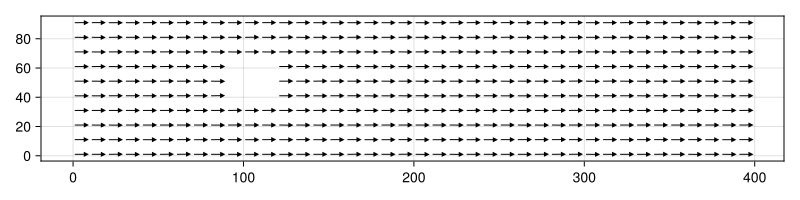

using CairoMakie
set_theme!()
const Nx = 400
const Ny = 100
rho0 = 100
tau = 0.6
## D2Q9 lattice
const Nl = 9
cx = Int64[0, 0, 1, 1, 1, 0,-1,-1,-1]
cy = Int64[0, 1, 1, 0,-1,-1,-1, 0, 1]
w = Float32[4/9,1/9,1/36,1/9,1/36,1/9,1/36,1/9,1/36]
flipdir_idx = [1, 6, 7, 8, 9, 2, 3, 4, 5]
cx3d = reshape(cx, 1, 1, :)
cy3d = reshape(cy, 1, 1, :)
## cylinder geometry
X = (1:Nx) * ones(Ny)'
Y = ones(Nx) * (1:Ny)'
cylinder = (X .- Nx/4).^2 .+ (Y .- Ny/2).^2 .< (Ny/6)^2
## initialise distributions
F = ones(Float32, (Nx, Ny, Nl)) # discretized
F .+= 0.01 * rand(Nx, Ny, Nl) # add some noise
F[:,:,4] .+= 1.3
rho = sum(F; dims = 3)
F .= F ./ rho * rho0
F[cylinder, :] .= 0.0
Fcache = zeros(Float32, Nx, Ny, 1)
;The Lattice Boltzmann Method (LBM) is a powerful computational technique for simulating fluid dynamics. It is built on the principles of molecular dynamics and the Boltzmann equation but simplifies these concepts to create a more computationally efficient method.
Boltzmann Equation and the Bhatnagar-Gross-Krook (BGK) approximation
Molecular dynamics (MD) models the motion of individual particles based on Newton’s laws, providing detailed insights into microscopic properties. However, MD is computationally expensive for simulating large-scale fluid flows.
The Boltzmann equation offers a bridge between microscopic particle dynamics and macroscopic fluid properties. Instead of following each particle, the Boltzmann equation looks at the evolution of the so-called particle distribution function \(f(x, \xi, t)\), which describes the probability of having a particle with position \(x\) and molecular velocity \(\xi\) at time \(t\).
Knowledge of the particle distribution function allows computation of macroscopic variables like density
\[ \int f(\xi, x, t) d^3\xi = \rho(t) \]
and momentum
\[ \int \xi f(\xi, x, t) d^3\xi = u \rho(t) \]
The Boltzmann equation describes how the particle distribution function evolves over time
\[ \frac{d}{dt}f(\xi,x,t) = \partial_t f + \frac{d\xi}{dt} \partial_\xi f + \frac{dx}{dt} \partial_x f = \Omega(f) \]
Here \(d\xi/dt\) describes external forces and the collision operator \(\Omega(f)\) represents the effect of collisions between particles.
In the Bhatnagar-Gross-Krook (BGK) approximation, the collision operator is defined as
\[ \Omega(f) = - \frac{1}{\tau}(f - f^{eq}) \]
i.e. the particle distribution relaxes towards its equilibrium distribution \(f^{eq}\) at the relaxation time scale \(\tau\).
Ignoring external forces (the term with \(d\xi/dt\)), the Boltzmann equation in the BGK approximation can then be written as
\[ \frac{d}{dt}f(\xi,x,t) = \partial_t f + \xi \partial_x f = - \frac{1}{\tau}(f - f^{eq}) \]
The change of the particle distribution function within a cell is, therefore, due to two mechanisms - streaming of particles into and out of the cell - collision of particles within the cell, which leads to a relaxation towards the equilibrium condition.
TODO: Eulerian vs Lagrangian perspective
The equilibrium distribution \(f^{eq}\) is given by the Maxwell-Boltzmann distribution
\[ f_{eq}(\mathbf{v}, \mathbf{x}, t) = \rho \left( \frac{1}{2\pi RT} \right)^{3/2} e^{-\frac{v^2}{2RT}} = \rho \left( \frac{1}{2\pi RT} \right)^{3/2} e^{\frac{-|\mathbf{\xi} - \mathbf{u}|^2}{2RT}} \]
Here \(\mathbf{u}\) is the macroscopic velocity, \(\xi\) the absolute molecular velocity, and \(\mathbf{v}=\xi-\mathbf{u}\) the relative molecular velocity, \(R\) is the kinetic gas constant and \(T\) the temperature.
Note: While the BGK approximation is good enough to recover Navier-Stokes behaviour, it is not really a good approximation to the Boltzmann equation.
Lattice Boltzmann method
To solve the Boltzmann equation numerically, it needs to be discretized in space, time, and velocity. Time is discretized into time steps \(\Delta t\) and space is discretized into a lattice with spacing \(\Delta x\). The trick in the discretation of the velocity space is to choose a finite number of velocities in such a way that in a single time step \(\Delta t\), particles can either - stay in their cell or - move to one of the neighbouring cells.
The D2Q9 scheme is a two-dimensional, nine-velocity model used in the LBM. The term “D2Q9” stands for two dimensions (D2) and nine discrete velocities (Q9). The scheme consists of a square lattice where each lattice node is connected to its neighbors via nine possible velocity vectors, including the zero vector (rest particle).
The nine discrete velocities in the D2Q9 scheme are typically represented as follows:
\[ \mathbf{e}_i = \begin{cases} (0, 0) & \text{for } i = 1 \\ (0, 1), (1, 0), (0, -1), (-1, 0) & \text{for } i = 2, 4, 6, 8 \\ (1, 1), (1, -1), (-1, -1), (-11, 1) & \text{for } i = 3, 5, 7, 9 \end{cases} \]
These velocities correspond to the rest particle (i = 1), the particles moving to the nearest neighbors (i even), and the particles moving to the next-nearest neighbors (i odd).
In the LBM, each velocity vector is associated with a weight that reflects the probability of a particle moving along that vector. The weights must satisfy certain constraints to ensure mass and momentum conservation. The weights can be derived by requiring that the moments of the equilibrium distribution function and the discretized distribution functions agree.
For the D2Q9 scheme, these weights are
\[ w_i = \begin{cases} 4/9 & \text{for } i = 1 \\ 1/9 & \text{for } i = 2, 4, 6, 8 \\ 1/36 & \text{for } i = 3, 5, 7, 9 \end{cases} \]
In LBM, the equilibrium distribution function \(f_i^{eq}\) is often approximated by a second-order Taylor expansion of the Maxwell-Boltzmann distribution
\[ f_i^{\text{eq}} = w_i \rho \left( 1 + \frac{\mathbf{e}_i \cdot \mathbf{u}}{c_s^2} + \frac{(\mathbf{e}_i \cdot \mathbf{u})^2}{2c_s^4} - \frac{\mathbf{u} \cdot \mathbf{u}}{2c_s^2} \right) \]
where \(w_i\) are the weights and \(c_s = \sqrt{RT} = \frac{1}{\sqrt{3}} \frac{\Delta x}{\Delta t}\) is the speed of sound in the lattice. Our choice of velocities implies \(\frac{\Delta x}{\Delta t} = 1\) and, therefore, \(c_s = 1/3\). The equilibrium particle distribution function can thus be written as
\[ f_i^{\text{eq}} = w_i \rho \left( 1 + 3 \mathbf{e}_i \cdot \mathbf{u} + \frac{9}{2} (\mathbf{e}_i \cdot \mathbf{u})^2 - \frac{3}{2}\mathbf{u} \cdot \mathbf{u} \right) \]
No-slip boundary condition (bounce back)
At the boundary surfaces, we impose a no-slip condition, i.e. the velocity at the boundary should be \(0\). In the LBM this can be achieved by setting the particle distribution function within the boundary to 0. In the streaming step at time \(t\), those discrete velocities that have a component towards the boundary are streamed into the boundary. Now bounce-back is applied within the boundary cells, i.e. all discrete velocity components are flipped. At time \(t + \Delta t\), the flipped discrete velocities are streamed back out of the boundary. This leads to all discrete velocities that have a component towards to boundary to be approximately 0.
Julia implementation
F contains the distribution function for the discretized velocities
F[ix, iy, l] corresponds to cell (ix, iy) and velocity (cx[l], cy[l]).
When streaming, the velocity F[ix, iy, l] is moved to F[ix + cx[l], iy + cy[l], l].
Let’s draw the initial velocities around the cylinder
## macroscopic variables
rho = sum(F, dims = 3)
ux = sum(F .* cx3d, dims = 3) ./ rho
uy = sum(F .* cy3d, dims = 3) ./ rho
ux[cylinder, 1] .= NaN
uy[cylinder, 1] .= NaN
fig = Figure(size = (800, 200))
Axis(fig[1, 1])
arrows!(1:10:Nx, 1:10:Ny,
ux[1:10:Nx,1:10:Ny,1],
uy[1:10:Nx,1:10:Ny,1], arrowsize = 7, lengthscale = 50)
fig
"""
stream distributions to neighbouring cells
"""
function stream!(F, cx, cy, Fcache)
Nx, Ny, Nl = size(F)
for l in 1:Nl
for ix in 1:Nx
nix = (ix - 1 + cx[l] + Nx) % Nx + 1
for iy in 1:Ny
niy = (iy - 1 + cy[l] + Ny) % Ny + 1
Fcache[nix, niy, 1] = F[ix, iy, l]
end
end
F[:,:,l] = Fcache
end
return nothing
end
"""
collide step within each cell to relax towords equilibrium distribution
"""
function collide!(F, cx, cy, Fcache)
Nx, Ny, Nl = size(F)
cx3d = reshape(cx, 1, 1, :)
cy3d = reshape(cy, 1, 1, :)
## macroscopic variables
rho = sum(F, dims = 3)
ux = sum(F .* cx3d, dims = 3) ./ rho
uy = sum(F .* cy3d, dims = 3) ./ rho
## F_eq
for l in 1:Nl
Fcache[:,:,1] = rho .* w[l] .* ( 1 .+ 3 .* (cx[l] .* ux .+ cy[l] .* uy) .+ 9 .* (cx[l] .* ux .+ cy[l] .* uy).^2 ./ 2 .- 3*(ux.^2 .+ uy.^2) ./ 2 )
F[:,:,l] .+= 1/tau .* (Fcache .- F[:,:,l])
end
return nothing
endcollide!function simulate!(F, cx, cy, cylinder, Fcache, Niter)
for it in 1:Niter
# absorbing boundaries
# replace cx = -1
F[end, :, [7, 8, 9]] .= F[end-1, :, [7,8,9]]
# replace cx = +1
F[1, :, [3, 4, 5]] .= F[2, :, [3,4,5]]
stream!(F, cx, cy, Fcache)
## no-slip boundary conditions (bounce-back)
## flip directions within boundaries
boundaryF = F[cylinder, flipdir_idx]
collide!(F, cx, cy, Fcache)
F[cylinder,:] = boundaryF
end
return nothing
endsimulate! (generic function with 1 method)simulate!(F, cx, cy, cylinder, Fcache, 250)
## macroscopic variables
rho = sum(F, dims = 3)
ux = sum(F .* cx3d, dims = 3) ./ rho
uy = sum(F .* cy3d, dims = 3) ./ rho
ux[cylinder, 1] .= 0
uy[cylinder, 1] .= 0
u = sqrt.(ux.^2 .+ uy .^ 2)[:,:,1]
fig = Figure(;size = (800, 200))
a, p = heatmap(fig[1,1], u)
Colorbar(fig[1,2], p)
fig
Create animation
f = Figure(;size = (800, 200))
ax1 = Axis(f[1,1])
record(f, "latticeboltzmann.gif", 1:100, framerate = 15) do i
simulate!(F, cx, cy, cylinder, Fcache, 100)
## compute macroscopic variables
rho = sum(F, dims = 3)
ux = sum(F .* cx3d, dims = 3) ./ rho
uy = sum(F .* cy3d, dims = 3) ./ rho
ux[cylinder, 1] .= 0
uy[cylinder, 1] .= 0
u = sqrt.(ux.^2 .+ uy .^ 2)[:,:,1]
empty!(ax1)
heatmap!(ax1, u)
end"latticeboltzmann.gif"
References
- https://github.com/pmocz/latticeboltzmann-python/
- https://github.com/Ceyron/machine-learning-and-simulation/blob/main/english/simulation_scripts/lattice_boltzmann_method_python_jax.py
- https://filelist.tudelft.nl/TNW/Afdelingen/Radiation%20Science%20and%20Technology/Research%20Groups/RPNM/Publications/BSc_Suzanne_Wetstein.pdf
- Mora et al.(2019), A concise python implementation of the lattice Boltzmann method on HPC for geo-fluid flow URL